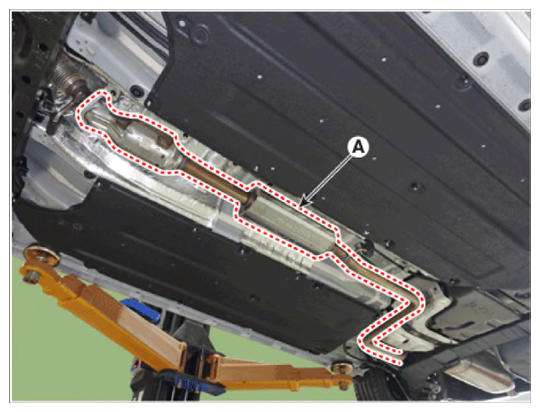

Center muffler & Catalytic converter assembly
WARNING: This page is about a different variant/trim than selected.
- Remove the front muffler heat protector (A).
Tightening torque:
9.8 - 11.8 N.m (1.0 - 1.2 kgf.m, 7.2 - 8.7 lb-ft)
- Remove the center muffler & catalytic converter assembly (A).
Tightening torque:
39.2 - 58.8 N.m (4.0 - 6.0 kgf.m, 28.9 - 43.4 lb-ft)

Courtesy of HYUNDAI MOTOR AMERICANOTE:- When installing, replace with new gaskets.
- Install in the reverse order of removal.